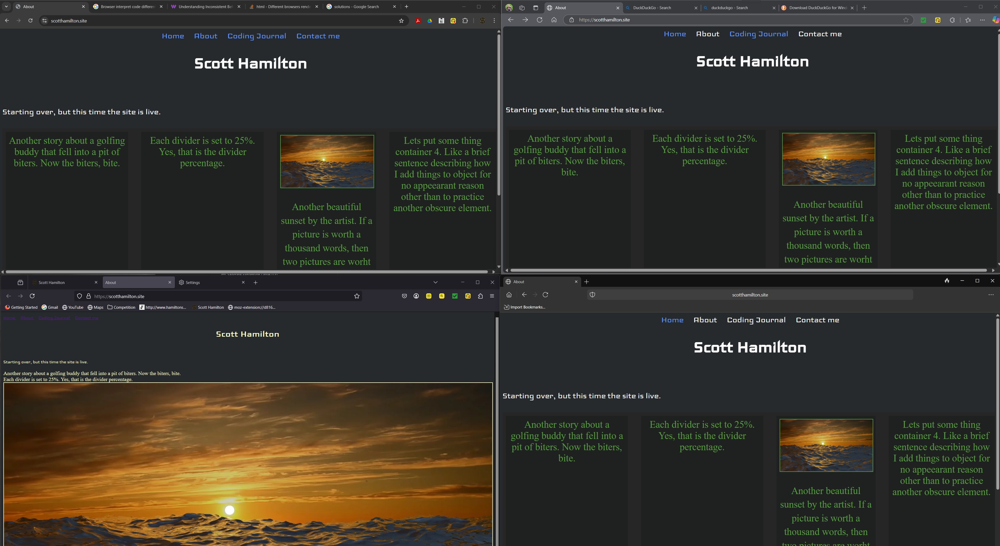

202504261821
When it comes to GitHub, I'll try this. Commiting after I have successfully completed all updates to files for that sesion and device.
202504260432
I have entered several journal entires that somehow didn't make it to the website. Here in this folder. I need to remember to download the files from the site before uploading more overwriting what I've put there from another device. Although the webhook idea is excellent for this. It just doesn't seem to work. I don't have that down ye. So, until I can master the webhook, which is probably simple to do, I just somehow make things difficult. Anyway until I master the webhook. I will need to make sure that I download the latest from the absolute main folder, which is the folder in the host's public folder. Alternatively it seem sto make more sense just to edit the html directly on the host, like what I'm doing here right now
202504190627
Entry via VSC on web browser though GitHub. This might be a better idea. Mostly the same functionalities, if not all. I was having trouble cloning a repository I just made with a fresh GitHub Account. I've slowly been moving everything to scoot.hamilton.solutions@gmail.com account emails. If that makes sense. Also scott@scott-hamilton.com. Ya, I love that.
202504170334
Right no< i'm on the laptop and this seems to be a premium way to go as far as coding goes. I have one local repository to keep track of, which is way easier and much more simlple than multiple local repositories. While I've discovered that I'ts completely possible to have multiple local repositories, I realized I then have to track all local repositories by adding extra steps. while It's not that difficult, right now I'm just learning this so keeping it as simple as possible seems to be the way I am going to go. I get on my laptop and I code for hours on end with no end to the flow of caffiene in sight. I'm in Visual Studio Code, just coding away. I then commit my changes to the remote Git repository of choice. Right now, that is GitHub. This is only due to it's popularity. I've also played with GitKraken, BitLocker, Sourcetree and other similar. So after I commit to GitHub. I then open Hostinger in my browser. I then go to the file manager section of a particular site. In this case https://scotthamilton.site. I then open my windows explorer and go to the local repository where I save the files I'm working on before I commit them. The files should be unchanged after the last save before the commit. So, I have the browser open full screen or on half the screen and then open the windows explorer in a small window or on the other side of the screen. I then drag and drop the files into the file on the website and choose to replace (overwrite) them. The files dropped and replaced are instantly live on the web then. This is my work flow.
202504151734
I suppose I would use github for software if I was developing software. When it comes to websites, idk. Seems like to me it doesn't make good sense to use GitHub for websites. At least I got my feet wet a little with GitHub. I'll have to start a project for some sort of application and use GitHub for it.
202504121900
I'm on my laptop. Yes I got one. It is a touch screen too, which I'm liking. I've created quite few repositories and websites.
I'm on the 2070 machine. I call it the 2070 machine, because the graphics card is a RTX 2070 super. About 4 gig of VRAM and about 5000 cuda cores. So right now, I'm not editing from Visual Studio Code. I'm editing right from the Public_html folder on Hostinger. The server I test this on is the internet it'self. Which from what I udnerstand is Hostinger's server. The server is the host if I"m not mistaken. Now I could be mistaken, but I don't think so.
202504101837
I'm on the 2070 machine. I call it the 2070 machine, because the graphics card is a RTX 2070 super. About 4 gig of VRAM and about 5000 cuda cores. So right now, I'm not editing from Visual Studio Code. I'm editing right from the Public_html folder on Hostinger. The server I test this on is the internet it'self. Which from what I udnerstand is Hostinger's server. The server is the host if I"m not mistaken. Now I could be mistaken, but I don't think so.
202504100359
I'm on the iPad using Koder. While Textasic is fantastic. Koder seems to be just a bit cleaner. So, with Koder I am able to download directly from my website files into a dropbox folder that is linked to the Koder app. where the page I'm working on gets replaced. I then can edit the file on my iPad, test it a bit then upload the file from Koder back to the website. That simple. nice.
On iPad with Textastic. While Koder is clean and all, it keeps crashing. Textastic has the dropbox ability that Koder has, but without the crashing. Even though Koder crases often. it manages to save the files as they were the moment it crashed. I beleive I am liking the method of downloaading from the website, then editing in ny IDE, then uploading the edited version directly to the wwbsite. Although I'm not keeping track of every version, it seems to be a much quicker workflow saving something ery valuable; Time. I still would rather do this on a laptop. Although after thinking about it a tic. A laotop would be significantly larger than my iPad and my iPad can barelyy fit into my car. So, theres that. What does all thid have to do with Coding? Convenience. (if I spelled that right.)
202504091850
I'm on the 2070. I added a few pages and updated the class for each page.
202504080419
I'm on the iPad here also. Except I have downloaded the codingjournal file and I am able to edit with the keyboard that is attached to the iPad. Im also able to utilize the arrow keys on the key board. This is much better. So the plan here is to edit with Textastic or Koder and then I could either just upload this to the website from the iPad without commiting this version to GitHub. Although I believe it would be a good practice to commit the version to GitHub to start properly utilizing GitHub and further get a better understanding of it. So, here it goes. I have a GihHub app on the iPad, I will try utilizing that to accomplish this, if that fails I I fail to accomplish that I will share that. Here it goes. Oh also if I'm succesfull, I'll share that too.
I,m on the iPad right here. editing right from the file on the website in the public folder. So, im not preferring this since i am typing this with the keyboard on the iPad. Woild it be wortH it to download the file and edit it with another editor so that i could utilize the keyboard.
202504071752
I'm not entirely certain yet as to how I will use GitHub and multiple devices. Right now I was using google drive, but I'm leaning towards drop box to upload to and download from. So, let me see if I have this right. I am working on system A11. I upload the files to Hostinger to update and test the code from their servers on multiple different browsers. Then I would download all the files from Hostiner onto system A11. Then upload those files to dropbox. Then on system 2070 I would download the files from Hostinger on the local hard drive. Then upload them into Dropbox. Okay. I can see where that does not make any sense.
Thinking out load here. If I dowload the files from the site in a zip file, then these files are the latest and greatest version. Before I open Visual Studio Code, I need to copy the files from the unzipped file that I just downloaded then paste them into the local repository. Then opne Visual Studio Code. The file will immediatley show they have changes to commit. Now right here is where I edit and commit the files. I suppose I could keep files in drop box, like images that I might want to access from anywhere to use in websites. Other than that I won't realy need drop box for keeping website files, rather other files, probably mostly images and video. Same goes for google drive.
SO, I edit the file on system 2070 then commit the changes to GitHub. I would then upload the files to the website's Public folder right form the local repository. Where the file is the latest commit. (right after commiting)
202504070512
Something I actually already knew, but didn't realize the impact of is that different browsers behave differently as depicted in the image below. There are many casuses for this, but the big main two and most common reasons are; Browser data, Browser interpretation. this is also known as "Inconsistent Behavior Across Browsers". There are several solutions to this issue that I came across in just a few minutes time. Such as creating a css file for each browser a user might use and somehow directing the browser to use that particular css file to render the page.
Further more, when it comes to testing sites created with simple html code on my own with no help or assistance from other software other than Visual Studo Code. I plan to check out the most commonly used browers that my target audience would use and then test them. Probably up to 4 different browsers. For now that is the plan. I have tested with the Go Live extension option in VSC and it works well, but does not reflect what the browser is doing. For example, when I use google chrome. I get the same result as an initial feed. So that the page doesn't change since chrome collects page information to store on your local system for fast page render times. To avoid this from happening. I will need to change the settings of the browser to never keep any online data, if that kind of thing is even possible these days.
I just installed Duck Duck Go browser and checked out scotthamilton.site which rendered a page that looked like the firefox browser. Then i utilized the Duck Duch Go clear browser date function with one click that acutally took two clicks, but it worked fine as far as I can tell. I then checked out the same site: scotthamilton.site and it looks refreshed. It looks like the edge and chrome browsers that I deleted the browser data from. It's like Duck Duck Go was using files from somewhere else other than it's own browsing data. like browsing data is stored somewhere else other than each browsers programing folders and files.
202504061341
Adding an iframe snipet to pull a list from a txt file with a list that was copied and pasted into.
2025042134
I have had several entries for the journey today. I am currently on 2070 and VSC i think might be the way to go for me, for now anyway. At least I learned most of my way around VS.
2025040842
VISUAL STUDIO 2022 (VS) and VISUAL STUDIO CODE (VSC) operate differently. Please note, when cloning a repository from GitHub to local device (at least on desktop) when using VS the repository will clone the entire folder into the folder you selected to clone to. Meaning that if you selected D: CLONED REPOS/APRILSWEBSITES, then VS will add APRILSWEBSITES to that location, looking like this; D: CLONED REPOS/APRILSWEBSITES/APRILSWEBSITES. Which is a little too janky for me. With VS when cloning a repository to a local device (desktop) VSC will add the folder of the repository to the folder selected, like this; D: CLONED REPOS/APRILSWEBSITES. Hope that makes sense.
202504050716
I've already learned quite a bit.
- The start of most html documents - !DOCTYPE html>
- Some of the tags I've learned about and that I also practice with regularly and my knowledge confidence level from 1 to 10 with 10 being highest confidence.'
- html - confidence-7
- head - confidence-3
- meta - confidence-3
- title - confidence-7
- body - confidence-7
- h1, h2, h3, h4, h5 - confidence-7
- p - confidence-6
- a - confidence-2
- div - confidence-2
- article - confidence-1
- section - confidence-1
- main - confidence-1
- span - confidence-3
- ol - confidence-7
- ul - confidence-7
- li - confidence-7
- br - confidence-7
- img - confidence-5
- html tags are code for the start and end of an elements.
- Elements are what is inside the opening and closing of an html tag.
- Self closing tags as they are referred to often in htm are actually void elements. Void elements are tags with no closing tag; for example an img tag or a meta tag. in HTML5 void elements can be written with or without the trailer slash. I will list all the self closing tags here below, when i get to it.
- area
- Depiction of open tags.
- VisualStudio
A good depiction of this found here

202504050640
I would first like to note the format for entry time "202504050640" broken down is ("0000" year with 4 digits, "0000" month and dqy both is with dual digits and both month and day totaling 4 digits, "0000" the time of day using military time format giving us a code for the time and day = 202504050640. This is how I plan to name things from here on out, including these journal entires as part of a name convention for myself. This portion of this journal is written with VS 2022, logging this journey journalistically in descending order on this page which I will somehow host live someday.